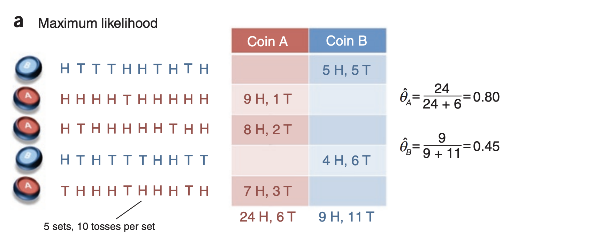
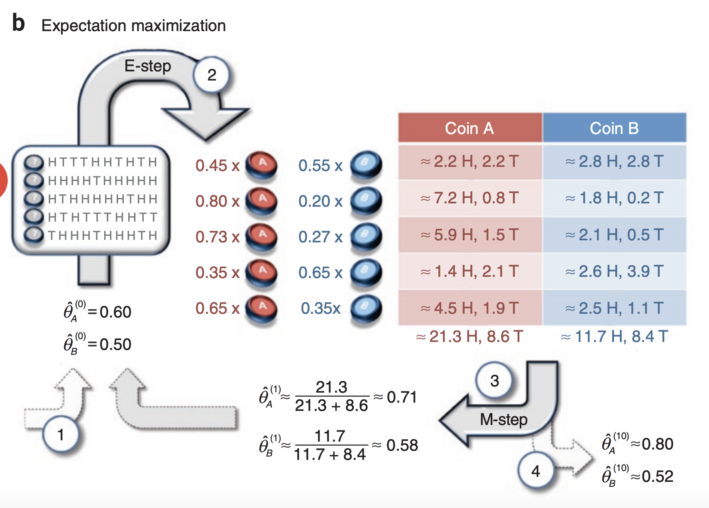
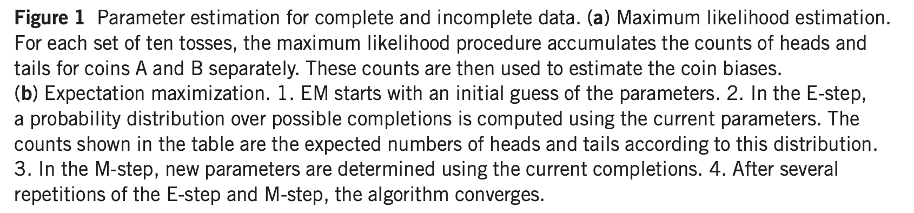
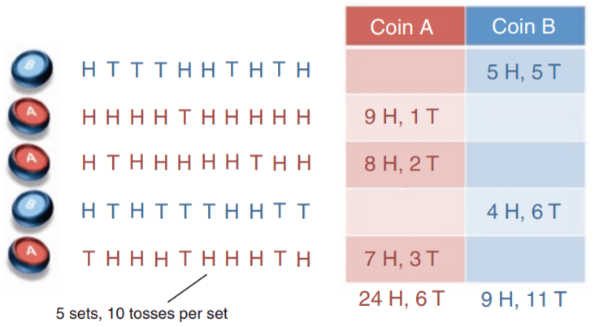
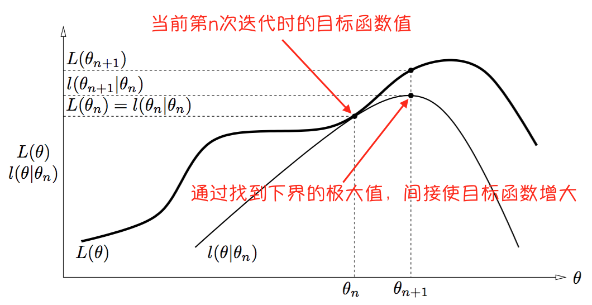
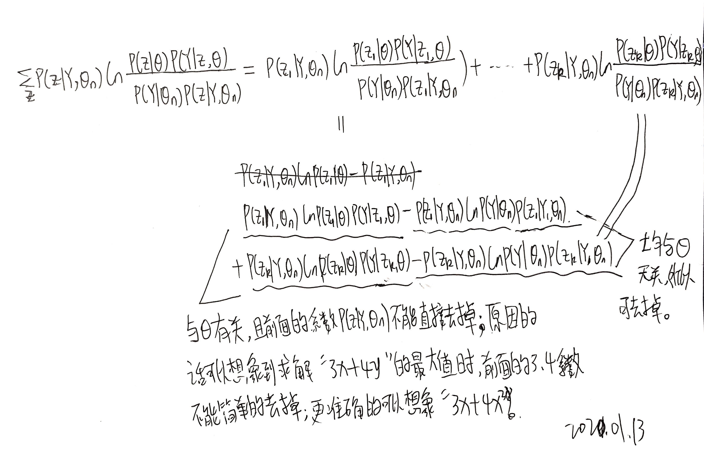
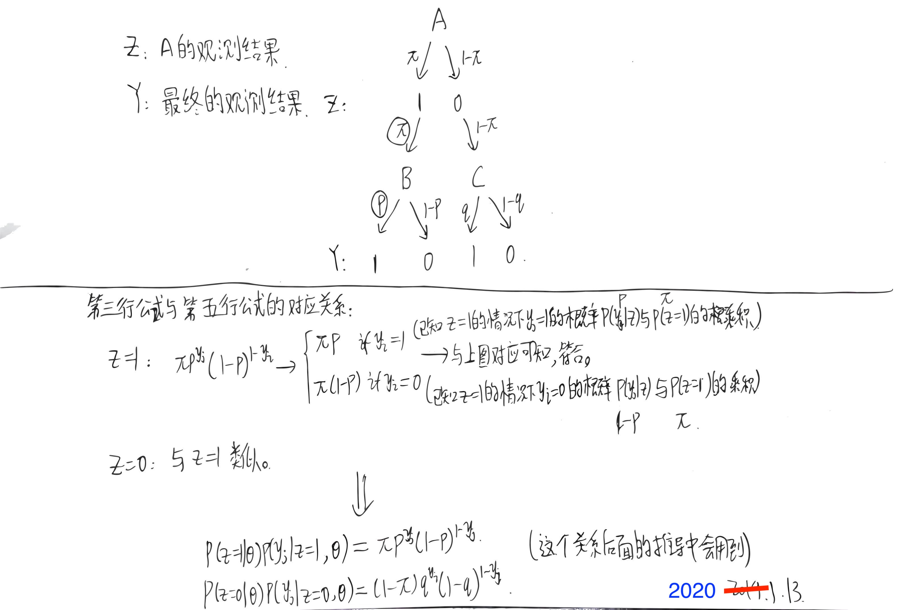

EM 算法是一种迭代算法，用于含有隐变量（hidden variable）的概率模型参数的极大似然估计，或极大后验概率估计。
概率模型有时既含有观测变量（observable variable），又含有隐变量或潜在变量（latent variable）。如果概率模型的变量都是观测变量，那么给定数据，可以直接用极大似然估计法，或贝叶斯估计法估计模型参数。但是，当模型含有隐变量时，就不能简单地使用这些估计方法。EM 算法就是含有隐变量的概率模型参数的极大似然估计法，或极大后验概率估计法。我们仅讨论极大似然估计，极大后验概率估计与其类似。
EM 算法的每次迭代由两步组成：E 步，求期望；M 步，求极大。所以这一算法称为期望极大算法，简称 EM 算法。
在开始学习书中的内容之前，建议先学习以下内容（尽管这部分内容也有点硬核）：
在开始“比较正式的”内容之前，可以先看一个下面的这个例子：
原文地址
例子原文（Do, C. B., & Batzoglou, S. (2008). What is the expectation maximization algorithm? Nature Biotechnology, 26(8), 897–899. doi:10.1038/nbt1406 ）：



假设有两枚硬币A和B，每次选一个硬币来抛10次。现在已经进行了5轮（也就是选了5次硬币，并分别抛了10次）结果如下（H表示正面，T表示反面）：

现在要求抛一次硬币A和硬币B正面朝上的概率（已知选的是A或者B硬币，求正面的概率 ），则我们可以简单的用极大似然估计来求解：
以硬币A的概率为例，抛硬币结果满足二项分布，可以写出似然函数：
L = ∏ i = 1 30 P ^ A y i ( 1 − P ^ A ) ( 1 − y i ) = P A ^ 24 ( 1 − P A ^ ) 6 \begin{aligned}
L &= \prod_{i=1}^{30}{\hat P_A}^{y_i}({1 -\hat P_A})^{(1- y_i)} \\
&= \hat{P_A}^{24}({1 -\hat{P_A}})^{6}
\end{aligned} L = i = 1 ∏ 3 0 P ^ A y i ( 1 − P ^ A ) ( 1 − y i ) = P A ^ 2 4 ( 1 − P A ^ ) 6
令其导数为0，则有
∂ L ∂ P ^ A = 24 P A 23 ( 1 − P ^ A ) 6 − 6 P A 24 ( 1 − P ^ A ) 5 = 0 \frac{\partial L}{\partial \hat{P}_{A}}=24 P_{A}^{23}\left(1-\hat{P}_{A}\right)^{6}-6 P_{A}^{24}\left(1-\hat{P}_{A}\right)^{5}=0 ∂ P ^ A ∂ L = 2 4 P A 2 3 ( 1 − P ^ A ) 6 − 6 P A 2 4 ( 1 − P ^ A ) 5 = 0
可得 P A ^ = 4 5 = 0.80 \hat{P_A} = \frac{4}{5} = 0.80 P A ^ = 5 4 = 0 . 8 0 P B ^ \hat{P_B} P B ^
P ^ A = 24 24 + 6 = 0.80 P ^ B = 9 9 + 11 = 0.45 \hat P_A = \frac{24}{24 + 6} = 0.80
\hat P_B = \frac{9}{9 + 11} = 0.45 P ^ A = 2 4 + 6 2 4 = 0 . 8 0 P ^ B = 9 + 1 1 9 = 0 . 4 5
现在让例子更复杂一点，假设我们每一轮不知道选的是硬币 A 还是硬币 B，只知道每一轮 10 次的结果：
硬币
正面数
反面数
？
5
5
？
9
1
？
8
2
？
4
6
？
7
3
现在仍然要求抛一次硬币 A 和硬币 B 正面的概率，怎么做呢？
这个时候相当于有隐变量 { z 1 , z 2 , z 3 , z 4 , z 5 } \{\bf z_1, z_2, z_3, z_4, z_5\} { z 1 , z 2 , z 3 , z 4 , z 5 } z 1 \bf z_1 z 1 z {\bf z} z P ^ A \hat P_A P ^ A P ^ B \hat P_B P ^ B z \bf z z P ^ A \hat P_A P ^ A P ^ B \hat P_B P ^ B z {\bf z} z P ^ A \hat P_A P ^ A P ^ B \hat P_B P ^ B
这时候 EM 算法就出来救场啦。EM 算法的步骤如下：
随机初始化 P ^ A ( 0 ) \hat P_A^{(0)} P ^ A ( 0 ) P ^ B ( 0 ) \hat P_B^{(0)} P ^ B ( 0 )
用 P ^ A ( 0 ) \hat P_A^{(0)} P ^ A ( 0 ) P ^ B ( 0 ) \hat P_B^{(0)} P ^ B ( 0 ) z \bf z z
根据估计出的隐变量 z \bf z z P ^ A ( 1 ) \hat P_A^{(1)} P ^ A ( 1 ) P ^ B ( 1 ) \hat P_B^{(1)} P ^ B ( 1 )
重复 2-3 步直到 P P P
现在我们来尝试手工计算一下，假设我们初始化 P ^ A ( 0 ) = 0.60 \hat P_A^{(0)} = 0.60 P ^ A ( 0 ) = 0 . 6 0 P ^ B ( 0 ) = 0.50 \hat P_B^{(0)}= 0.50 P ^ B ( 0 ) = 0 . 5 0 z \bf z z
对于第一轮，如果是硬币 A，可以计算出生成的概率为 a = 0. 6 5 ( 1 − 0.6 ) 5 = 0.0007962624 a = 0.6^5(1-0.6)^5=0.0007962624 a = 0 . 6 5 ( 1 − 0 . 6 ) 5 = 0 . 0 0 0 7 9 6 2 6 2 4 b = 0. 5 5 ( 1 − 0.5 ) 5 = 0.0009765625 b = 0.5^5(1-0.5)^5=0.0009765625 b = 0 . 5 5 ( 1 − 0 . 5 ) 5 = 0 . 0 0 0 9 7 6 5 6 2 5
则使用硬币 A 的概率为 a / ( a + b ) = 0.45 a / (a + b) = 0.45 a / ( a + b ) = 0 . 4 5 b / ( a + b ) = 0.55 b / (a + b) = 0.55 b / ( a + b ) = 0 . 5 5
接着根据估计出的隐变量 z \bf z z P ^ A ( 1 ) \hat P_A^{(1)} P ^ A ( 1 ) P ^ B ( 1 ) \hat P_B^{(1)} P ^ B ( 1 ) 0.45 ∗ 5 = 2.25 0.45 * 5 = 2.25 0 . 4 5 ∗ 5 = 2 . 2 5 0.55 ∗ 5 = 2.75 0.55 * 5 = 2.75 0 . 5 5 ∗ 5 = 2 . 7 5
选择 A 的概率
A 的正面贡献
A 的反面贡献
选择 B 的概率
B 的正面贡献
B 的反面贡献
0.45
2.25
2.25
0.55
2.75
2.75
0.80
7.24
0.8
0.20
1.76
0.20
0.73
5.87
1.47
0.27
2.13
0.53
0.35
1.41
2.11
0.65
2.59
3.89
0.65
4.53
1.94
0.35
2.47
1.06
self： 在理解这里的时候，对上述所述内容理解的时候可能会比较“别扭”；我也想了好一会儿，但还是觉得“别扭”；所以我觉得更“自然”的理解如下：
之前某一轮的进行只可能是（一个）硬币 A 或 （一个）硬币 B（去抛 10 次），而现在则是（以第一轮为例） 0.45 个硬币 A（对应是 A 的概率为 0.45）和 0.55 个硬币 B（对应是 B 的概率是 0.55）（去抛 10 次） ；然后看一下在这一轮的 5H5T（这个是已知的）有多少个是由 A 或 B 产生的；以其中的 5H 为例，因为这一轮中有 0.45 个硬币 A，所以这 5H 中由 A 产生的就是 5 * 0.45 = 2.25，由 B 产生的就是 5 * 0.55 = 2.75（2.25 + 2.75 还是最终的 5 个 H），5T 与之类似，因为这一轮中有 0.45 个硬币 A，所以这 5T 中由 A 产生的就是 5 * 0.45 = 2.25，由 B 产生的就是 5 * 0.55 = 2.75（2.25 + 2.75 还是最终的 5 个 H）。
可以在再看一下第二轮。第二轮的结果是 9H1T，这一轮中选择 A 的概率是 0.8，选择 B 的概率是 0.2，所以可以理解为这一轮中包含 0.8 个硬币 A 及 0.2 个硬币 B；所以 9H1T 中的 9H 就是：有 9 * 0.8 = 7.2 个由 A 组成，有 9 * 0.2 = 1.8 个由 B 组成；1T 中有 1 * 0.8 = 0.8 个由 A 组成，有 9 * 0.2 = 0.2 个由 B 组成。
可以将上面的内容简单汇总到如下：
对比
硬币组成（选择 A/B 的概率）
结果
H 中 A 的个数
T 中 A 的个数
H 中 B 的个数
T 中 B 的个数
改变前
都是 A（一个 A 去抛）
5H5T
5
5
0
0
改变前
都是 B（一个 B 去抛）
5H5T
0
0
5
5
改变后
0.45 个 A + 0.55 个 B
5H5T
5*0.45=2.25
5*0.45=2.25
5*0.55=2.75
5*0.55=2.75
改变后
0.8 个 A + 0.2 个 B
9H1T
9*0.8=7.2
1*0.8=0.8
9*0.2=1.8
1*0.2=0.2
仔细看上述的结果，会发现会与原文中的结果有点不同。返回去看一下原文中的表格数据，会发现其数据前面用了 ≈ \approx ≈
统计得到：A 总共有 21.3 次正面，8.6 次反面，B 有 11.7 次正面，8.4 次反面，因此更新新的概率
𝑃 ^ ( 1 ) 𝐴 = 21.321.3 + 8.6 ≈ 0.71 𝑃 ^ ( 1 ) 𝐵 = 11.711.7 + 8.4 ≈ 0.58 P A ( 1 ) = 21.321.3 + 8.6 ≈ 0.71 P B ( 1 ) = 11.711.7 + 8.4 ≈ 0.58 P ^ A ( 1 ) = 21.3 21.3 + 8.6 ≈ 0.71 P ^ B ( 1 ) = 11.7 11.7 + 8.4 ≈ 0.58 𝑃̂ (1)𝐴=21.321.3+8.6≈0.71𝑃̂ (1)𝐵=11.711.7+8.4≈0.58P^A(1)=21.321.3+8.6≈0.71P^B(1)=11.711.7+8.4≈0.58 \hat P_A^{(1)} = \frac{21.3}{21.3+8.6} \approx 0.71 \hat P_B^{(1)} = \frac{11.7}{11.7+8.4} \approx 0.58 P ^ ( 1 ) A = 2 1 . 3 2 1 . 3 + 8 . 6 ≈ 0 . 7 1 P ^ ( 1 ) B = 1 1 . 7 1 1 . 7 + 8 . 4 ≈ 0 . 5 8 P A ( 1 ) = 2 1 . 3 2 1 . 3 + 8 . 6 ≈ 0 . 7 1 P B ( 1 ) = 1 1 . 7 1 1 . 7 + 8 . 4 ≈ 0 . 5 8 P ^ A ( 1 ) = 2 1 . 3 + 8 . 6 2 1 . 3 ≈ 0 . 7 1 P ^ B ( 1 ) = 1 1 . 7 + 8 . 4 1 1 . 7 ≈ 0 . 5 8
重复上面的过程，到第 10 次的时候收敛有:
𝑃 ^ ( 10 ) 𝐴 ≈ 0.80 𝑃 ^ ( 10 ) 𝐵 ≈ 0.52 P A ( 10 ) ≈ 0.80 P B ( 10 ) ≈ 0.52 P ^ A ( 10 ) ≈ 0.80 P ^ B ( 10 ) ≈ 0.52 𝑃̂ (10)𝐴≈0.80𝑃̂ (10)𝐵≈0.52P^A(10)≈0.80P^B(10)≈0.52 \hat P_A^{(10)} \approx 0.80 \hat P_B^{(10)} \approx 0.52 P ^ ( 1 0 ) A ≈ 0 . 8 0 P ^ ( 1 0 ) B ≈ 0 . 5 2 P A ( 1 0 ) ≈ 0 . 8 0 P B ( 1 0 ) ≈ 0 . 5 2 P ^ A ( 1 0 ) ≈ 0 . 8 0 P ^ B ( 1 0 ) ≈ 0 . 5 2
原文地址：https://www.cnblogs.com/Determined22/p/5776791.html
数理统计的基本问题就是根据样本所提供的信息，对总体的分布或者分布的数字特征作出统计推断。所谓总体 ，就是一个具有确定分布的随机变量，来自总体的每一个 iid 样本 都是一个与总体有相同分布的随机变量。
参数估计是指这样一类问题——总体所服从的分布类型已知，但某些参数未知：设 Y 1 , . . . , Y N Y_1,...,Y_N Y 1 , . . . , Y N Y Y Y Y = ( y 1 , . . . , y N ) Y=(y_1,...,y_N) Y = ( y 1 , . . . , y N ) Y 1 , . . . , Y N Y_1,...,Y_N Y 1 , . . . , Y N 可观测的 ，那么直接用极大似然估计法就可以估计参数 θ \theta θ
但是，如果里面含有不可观测的隐变量 ，使用MLE就没那么容易。EM算法正是服务于求解带有隐变量的参数估计问题。
下面考虑带有隐变量 Z Z Z z z z 。将观测数据（亦称不完全数据）记为 Y = ( y 1 , . . . , y N ) Y=(y_1,...,y_N) Y = ( y 1 , . . . , y N ) 不可观测数据 记为 Z = ( z 1 , . . . , z N ) Z=(z_1,...,z_N) Z = ( z 1 , . . . , z N ) Y Y Y Z Z Z 完全数据 。那么观测数据的似然函数 为
l ( θ ) = ∏ j = 1 N P ( y j ∣ θ ) = ∏ j = 1 N ∑ z P ( z ∣ θ ) P ( y j ∣ z , θ ) l(\theta)=\prod_{j=1}^NP(y_j|\theta)=\prod_{j=1}^N\sum_zP(z|\theta)P(y_j|z,\theta) l ( θ ) = j = 1 ∏ N P ( y j ∣ θ ) = j = 1 ∏ N z ∑ P ( z ∣ θ ) P ( y j ∣ z , θ )
self：注意到上式中 j j j j = 1 , 2 , . . , N j = 1,2, .. ,N j = 1 , 2 , . . , N N N N N N N
self：上式中的 P ( y j ∣ θ ) P(y_j|\theta) P ( y j ∣ θ ) P ( A ) = ∑ j = 1 n P ( B j ) P ( A ∣ B j ) P(A)=\sum_{j=1}^{n} P\left(B_{j}\right) P\left(A | B_{j}\right) P ( A ) = ∑ j = 1 n P ( B j ) P ( A ∣ B j )
其中求和号表示对 z z z θ \theta θ θ \theta θ P ( y j ∣ θ ) P(y_j|\theta) P ( y j ∣ θ ) 应该是用分号隔开（P ( y j ; θ ) P(y_j;\theta) P ( y j ; θ ) 。这里为了和参考资料里描述的一致，就不改了。
为了省事，表述成这个形式：
l ( θ ) = P ( Y ∣ θ ) = ∑ z P ( z ∣ θ ) P ( Y ∣ z , θ ) l(\theta)=P(Y|\theta)=\sum_zP(z|\theta)P(Y|z,\theta) l ( θ ) = P ( Y ∣ θ ) = z ∑ P ( z ∣ θ ) P ( Y ∣ z , θ )
不然的话后面所有的推导都要套一个求和号（因为会取对数似然，求积变求和）。
对数似然：
L ( θ ) = ln P ( Y ∣ θ ) = ln ∑ z P ( z ∣ θ ) P ( Y ∣ z , θ ) L(\theta)=\ln P(Y|\theta)=\ln \sum_zP(z|\theta)P(Y|z,\theta) L ( θ ) = ln P ( Y ∣ θ ) = ln z ∑ P ( z ∣ θ ) P ( Y ∣ z , θ )
EM算法是一种迭代算法，通过迭代的方式求取目标函数 L ( θ ) = ln P ( Y ∣ θ ) L(\theta)=\ln P(Y|\theta) L ( θ ) = ln P ( Y ∣ θ ) n n n θ n \theta_n θ n L ( θ n + 1 ) > L ( θ n ) L(\theta_{n+1})>L(\theta_n) L ( θ n + 1 ) > L ( θ n )
L ( θ ) − L ( θ n ) = ln ( ∑ z P ( z ∣ θ ) P ( Y ∣ z , θ ) ) − ln P ( Y ∣ θ n ) L(\theta)-L(\theta_n)=\ln (\sum_zP(z|\theta)P(Y|z,\theta))-\ln P(Y|\theta_n) L ( θ ) − L ( θ n ) = ln ( z ∑ P ( z ∣ θ ) P ( Y ∣ z , θ ) ) − ln P ( Y ∣ θ n )
使用琴生不等式（Jensen inequality）：
ln ∑ j λ j y j ≥ ∑ j λ j log y j , λ j ≥ 0 , ∑ j λ j = 1 \ln\sum_j\lambda_jy_j\geq \sum_j\lambda_j\log y_j,\quad \lambda_j\ge 0,\sum_j\lambda_j=1 ln j ∑ λ j y j ≥ j ∑ λ j log y j , λ j ≥ 0 , j ∑ λ j = 1
因为 ∑ z P ( z ∣ Y , θ n ) = 1 \sum_zP(z|Y,\theta_n)=1 ∑ z P ( z ∣ Y , θ n ) = 1 L ( θ ) − L ( θ n ) L(\theta)-L(\theta_n) L ( θ ) − L ( θ n )
ln ( ∑ z P ( z ∣ θ ) P ( Y ∣ z , θ ) ) = ln ( ∑ z P ( z ∣ Y , θ n ) P ( z ∣ θ ) P ( Y ∣ z , θ ) P ( z ∣ Y , θ n ) ) ≥ ∑ z P ( z ∣ Y , θ n ) ln P ( z ∣ θ ) P ( Y ∣ z , θ ) P ( z ∣ Y , θ n ) \begin{aligned} \ln (\sum_zP(z|\theta)P(Y|z,\theta))&=\ln (\sum_zP(z|Y,\theta_n)\frac{P(z|\theta)P(Y|z,\theta)}{P(z|Y,\theta_n)})\\&\ge \sum_zP(z|Y,\theta_n)\ln \frac{P(z|\theta)P(Y|z,\theta)}{P(z|Y,\theta_n)}\end{aligned} ln ( z ∑ P ( z ∣ θ ) P ( Y ∣ z , θ ) ) = ln ( z ∑ P ( z ∣ Y , θ n ) P ( z ∣ Y , θ n ) P ( z ∣ θ ) P ( Y ∣ z , θ ) ) ≥ z ∑ P ( z ∣ Y , θ n ) ln P ( z ∣ Y , θ n ) P ( z ∣ θ ) P ( Y ∣ z , θ )
self：上式中的第一行用到的技巧是将在分子分母同乘以 P ( z ∣ Y , θ n ) P(z|Y,\theta_n) P ( z ∣ Y , θ n )
第二项有
− ln P ( Y ∣ θ n ) = − ∑ z P ( z ∣ Y , θ n ) ln P ( Y ∣ θ n ) -\ln P(Y|\theta_n)=-\sum_zP(z|Y,\theta_n)\ln P(Y|\theta_n) − ln P ( Y ∣ θ n ) = − z ∑ P ( z ∣ Y , θ n ) ln P ( Y ∣ θ n )
self：上式就根据 l n P ( Y ∣ θ ) ln P(Y|\theta) l n P ( Y ∣ θ ) l ( θ ) = P ( Y ∣ θ ) = ∑ z P ( z ∣ θ ) P ( Y ∣ z , θ ) l(\theta)=P(Y|\theta)=\sum_zP(z|\theta)P(Y|z,\theta) l ( θ ) = P ( Y ∣ θ ) = ∑ z P ( z ∣ θ ) P ( Y ∣ z , θ ) P ( A ) P ( B ∣ A ) = P ( A B ) = P ( B ) P ( A ∣ B ) P(A)P(B|A) = P(AB) = P(B)P(A|B) P ( A ) P ( B ∣ A ) = P ( A B ) = P ( B ) P ( A ∣ B )
则 L ( θ ) − L ( θ n ) L(\theta)-L(\theta_n) L ( θ ) − L ( θ n )
L ( θ ) − L ( θ n ) ≥ ∑ z P ( z ∣ Y , θ n ) ln P ( z ∣ θ ) P ( Y ∣ z , θ ) P ( z ∣ Y , θ n ) − ∑ z P ( z ∣ Y , θ n ) ln P ( Y ∣ θ n ) = ∑ z [ P ( z ∣ Y , θ n ) ln P ( z ∣ θ ) P ( Y ∣ z , θ ) P ( z ∣ Y , θ n ) − P ( z ∣ Y , θ n ) ln P ( Y ∣ θ n ) ] = ∑ z P ( z ∣ Y , θ n ) ln P ( z ∣ θ ) P ( Y ∣ z , θ ) P ( Y ∣ θ n ) P ( z ∣ Y , θ n ) \begin{aligned} L(\theta)-L(\theta_n)&\ge\sum_zP(z|Y,\theta_n)\ln\frac{P(z|\theta)P(Y|z,\theta)}{P(z|Y,\theta_n)}-\sum_zP(z|Y,\theta_n)\ln P(Y|\theta_n)\\&=\sum_z[P(z|Y,\theta_n)\ln\frac{P(z|\theta)P(Y|z,\theta)}{P(z|Y,\theta_n)}-P(z|Y,\theta_n)\ln P(Y|\theta_n)]\\&=\sum_zP(z|Y,\theta_n)\ln\frac{P(z|\theta)P(Y|z,\theta)}{P(Y|\theta_n)P(z|Y,\theta_n)} \end{aligned} L ( θ ) − L ( θ n ) ≥ z ∑ P ( z ∣ Y , θ n ) ln P ( z ∣ Y , θ n ) P ( z ∣ θ ) P ( Y ∣ z , θ ) − z ∑ P ( z ∣ Y , θ n ) ln P ( Y ∣ θ n ) = z ∑ [ P ( z ∣ Y , θ n ) ln P ( z ∣ Y , θ n ) P ( z ∣ θ ) P ( Y ∣ z , θ ) − P ( z ∣ Y , θ n ) ln P ( Y ∣ θ n ) ] = z ∑ P ( z ∣ Y , θ n ) ln P ( Y ∣ θ n ) P ( z ∣ Y , θ n ) P ( z ∣ θ ) P ( Y ∣ z , θ )
self：上式推导关键就是将 P ( z ∣ Y , θ n ) P(z|Y,\theta_n) P ( z ∣ Y , θ n )
定义一个函数 l ( θ ∣ θ n ) l(\theta|\theta_n) l ( θ ∣ θ n )
l ( θ ∣ θ n ) ≜ L ( θ n ) + ∑ z P ( z ∣ Y , θ n ) ln P ( z ∣ θ ) P ( Y ∣ z , θ ) P ( Y ∣ θ n ) P ( z ∣ Y , θ n ) l(\theta|\theta_n)\triangleq L(\theta_n)+\sum_zP(z|Y,\theta_n)\ln\frac{P(z|\theta)P(Y|z,\theta)}{P(Y|\theta_n)P(z|Y,\theta_n)} l ( θ ∣ θ n ) ≜ L ( θ n ) + z ∑ P ( z ∣ Y , θ n ) ln P ( Y ∣ θ n ) P ( z ∣ Y , θ n ) P ( z ∣ θ ) P ( Y ∣ z , θ )
从而有 L ( θ ) ≥ l ( θ ∣ θ n ) L(\theta)\ge l(\theta|\theta_n) L ( θ ) ≥ l ( θ ∣ θ n ) n n n L ( θ ) L(\theta) L ( θ ) l ( θ ∣ θ n ) l(\theta|\theta_n) l ( θ ∣ θ n ) L ( θ n ) = l ( θ n ∣ θ n ) L(\theta_n)=l(\theta_n|\theta_n) L ( θ n ) = l ( θ n ∣ θ n )
self ：上式中 L ( θ n ) = l ( θ n ∣ θ n ) L(\theta_n)=l(\theta_n|\theta_n) L ( θ n ) = l ( θ n ∣ θ n )
l ( θ n ∣ θ n ) = L ( θ n ) + ∑ z P ( z ∣ Y , θ n ) ln P ( z ∣ θ ) P ( Y ∣ z , θ ) P ( Y ∣ θ n ) P ( z ∣ Y , θ n ) = L ( θ n ) + ∑ z P ( z ∣ Y , θ n ) ln P ( z ∣ Y , θ n ) P ( Y ∣ θ n ) P ( Y ∣ θ n ) P ( z ∣ Y , θ n ) = L ( θ n ) + 0 = L ( θ n ) l(\theta_n|\theta_n) = L(\theta_n)+\sum_zP(z|Y,\theta_n)\ln\frac{P(z|\theta)P(Y|z,\theta)}{P(Y|\theta_n)P(z|Y,\theta_n)} = L(\theta_n)+\sum_zP(z|Y,\theta_n)\ln\frac{P(z|Y,\theta_n)P(Y|\theta_n)}{P(Y|\theta_n)P(z|Y,\theta_n)} = L(\theta_n) + 0 = L(\theta_n) l ( θ n ∣ θ n ) = L ( θ n ) + z ∑ P ( z ∣ Y , θ n ) ln P ( Y ∣ θ n ) P ( z ∣ Y , θ n ) P ( z ∣ θ ) P ( Y ∣ z , θ ) = L ( θ n ) + z ∑ P ( z ∣ Y , θ n ) ln P ( Y ∣ θ n ) P ( z ∣ Y , θ n ) P ( z ∣ Y , θ n ) P ( Y ∣ θ n ) = L ( θ n ) + 0 = L ( θ n )
用到了条件概率公式（的衍生公式）：P ( A ) P ( B ∣ A ) = P ( A B ) = P ( B ) P ( A ∣ B ) P(A)P(B|A) = P(AB) = P(B)P(A|B) P ( A ) P ( B ∣ A ) = P ( A B ) = P ( B ) P ( A ∣ B )
我们的目的是使下一次迭代后得到的目标函数值能够大于当前的值： L ( θ n + 1 ) > L ( θ n ) L(\theta_{n+1})>L(\theta_n) L ( θ n + 1 ) > L ( θ n ) L ( θ n + 1 ) > l ( θ n ∣ θ n ) L(\theta_{n+1})>l(\theta_n|\theta_n) L ( θ n + 1 ) > l ( θ n ∣ θ n )
而在当前，L ( θ ) L(\theta) L ( θ ) l ( θ ∣ θ n ) l(\theta|\theta_n) l ( θ ∣ θ n ) 任何能让 l ( θ ∣ θ n ) l(\theta|\theta_n) l ( θ ∣ θ n ) θ \theta θ L ( θ ) L(\theta) L ( θ )
也就是说，能满足 l ( θ n + 1 ∣ θ n ) > l ( θ n ∣ θ n ) l(\theta_{n+1}|\theta_n)>l(\theta_n|\theta_n) l ( θ n + 1 ∣ θ n ) > l ( θ n ∣ θ n ) L ( θ n + 1 ) > l ( θ n ∣ θ n ) = L ( θ n ) L(\theta_{n+1})>l(\theta_n|\theta_n)=L(\theta_n) L ( θ n + 1 ) > l ( θ n ∣ θ n ) = L ( θ n )
通过下图（来源：参考资料[1]，自己做了点注释）可以解释：

需要注意的是，下界的曲线当然是随着迭代的进行而变化的：在第 i i i L ( θ ) ≥ l ( θ ∣ θ i ) L(\theta)\ge l(\theta|\theta_i) L ( θ ) ≥ l ( θ ∣ θ i ) L ( θ i ) = l ( θ i ∣ θ i ) L(\theta_i)=l(\theta_i|\theta_i) L ( θ i ) = l ( θ i ∣ θ i )
换句话说，EM算法通过优化对数似然在当前的下界，来间接优化对数似然。
ok，那么现在问题就从找满足 L ( θ n + 1 ) > L ( θ n ) L(\theta_{n+1})>L(\theta_n) L ( θ n + 1 ) > L ( θ n ) θ n + 1 \theta_{n+1} θ n + 1 l ( θ n + 1 ∣ θ n ) > l ( θ n ∣ θ n ) l(\theta_{n+1}|\theta_n)>l(\theta_n|\theta_n) l ( θ n + 1 ∣ θ n ) > l ( θ n ∣ θ n ) θ n + 1 \theta_{n+1} θ n + 1 θ n + 1 \theta_{n+1} θ n + 1 l ( θ ∣ θ n ) l(\theta|\theta_n) l ( θ ∣ θ n )
θ n + 1 = arg max θ l ( θ ∣ θ n ) \theta_{n+1}=\arg\max_\theta l(\theta|\theta_n) θ n + 1 = arg θ max l ( θ ∣ θ n )
self： 上述之所以要找到 θ n + 1 \theta_{n+1} θ n + 1 l ( θ ∣ θ n ) l(\theta|\theta_n) l ( θ ∣ θ n ) θ \theta θ n n n θ \theta θ n n n l ( θ n + 1 ∣ θ n ) > l ( θ n ∣ θ n ) l(\theta_{n+1}|\theta_n)>l(\theta_n|\theta_n) l ( θ n + 1 ∣ θ n ) > l ( θ n ∣ θ n ) l ( θ ∣ θ n ) l(\theta|\theta_n) l ( θ ∣ θ n ) n n n
把 l ( θ ∣ θ n ) l(\theta|\theta_n) l ( θ ∣ θ n ) θ \theta θ
θ n + 1 = arg max θ ∑ z P ( z ∣ Y , θ n ) ln [ P ( z ∣ θ ) P ( Y ∣ z , θ ) ] = arg max θ ∑ z P ( z ∣ Y , θ n ) ln P ( Y , z ∣ θ ) \begin{aligned} \theta_{n+1}&=\arg\max_\theta \sum_zP(z|Y,\theta_n)\ln [P(z|\theta)P(Y|z,\theta)]\\&=\arg\max_\theta \sum_zP(z|Y,\theta_n)\ln P(Y,z|\theta) \end{aligned} θ n + 1 = arg θ max z ∑ P ( z ∣ Y , θ n ) ln [ P ( z ∣ θ ) P ( Y ∣ z , θ ) ] = arg θ max z ∑ P ( z ∣ Y , θ n ) ln P ( Y , z ∣ θ )
self： 对于上式，可能会疑惑为什么只去掉原式 l ( θ ∣ θ n ) ≜ L ( θ n ) + ∑ z P ( z ∣ Y , θ n ) ln P ( z ∣ θ ) P ( Y ∣ z , θ ) P ( Y ∣ θ n ) P ( z ∣ Y , θ n ) l(\theta|\theta_n)\triangleq L(\theta_n)+\sum_zP(z|Y,\theta_n)\ln\frac{P(z|\theta)P(Y|z,\theta)}{P(Y|\theta_n)P(z|Y,\theta_n)} l ( θ ∣ θ n ) ≜ L ( θ n ) + ∑ z P ( z ∣ Y , θ n ) ln P ( Y ∣ θ n ) P ( z ∣ Y , θ n ) P ( z ∣ θ ) P ( Y ∣ z , θ ) l n ln l n P ( Y ∣ θ n ) P ( z ∣ Y , θ n ) P(Y|\theta_n)P(z|Y,\theta_n) P ( Y ∣ θ n ) P ( z ∣ Y , θ n ) l n ln l n P ( Y ∣ θ n ) P ( z ∣ Y , θ n ) P(Y|\theta_n)P(z|Y,\theta_n) P ( Y ∣ θ n ) P ( z ∣ Y , θ n ) P ( Y ∣ θ n ) P ( z ∣ Y , θ n ) P(Y|\theta_n)P(z|Y,\theta_n) P ( Y ∣ θ n ) P ( z ∣ Y , θ n )

回顾一下随机变量的期望的表达式：
E [ Z ] = ∑ k P ( Z = z k ) z k \mathbb E[\boldsymbol Z]=\sum_kP(\boldsymbol Z=z_k)z_k E [ Z ] = k ∑ P ( Z = z k ) z k
E [ g ( Z ) ] = ∑ k P ( Z = z k ) g ( z k ) \mathbb E[g(\boldsymbol Z)]=\sum_kP(\boldsymbol Z=z_k)g(z_k) E [ g ( Z ) ] = k ∑ P ( Z = z k ) g ( z k )
E [ Z ∣ Y = y ] = ∑ k P ( Z = z k ∣ Y = y ) z k \mathbb E[\boldsymbol Z|\boldsymbol Y=y]=\sum_kP(\boldsymbol Z=z_k|\boldsymbol Y=y)z_k E [ Z ∣ Y = y ] = k ∑ P ( Z = z k ∣ Y = y ) z k
所以：
θ n + 1 = arg max θ E Z ∣ Y , θ n [ ln P ( Y , z ∣ θ ) ] = arg max θ Q ( θ ∣ θ n ) \begin{aligned} \theta_{n+1}&=\arg\max_\theta \mathbb E_{\boldsymbol Z|\boldsymbol Y,\theta_n}[\ln P(Y,z|\theta)]\\&=\arg\max_\theta Q(\theta|\theta_n) \end{aligned} θ n + 1 = arg θ max E Z ∣ Y , θ n [ ln P ( Y , z ∣ θ ) ] = arg θ max Q ( θ ∣ θ n )
self： 可能并不是非常“普适”的理解是，将 Q Q Q Q ( θ ∣ θ n ) = ∑ z P ( z ∣ Y , θ n ) ln P ( Y , z ∣ θ ) Q(\theta|\theta_n) = \sum_zP(z|Y,\theta_n)\ln P(Y,z|\theta) Q ( θ ∣ θ n ) = ∑ z P ( z ∣ Y , θ n ) ln P ( Y , z ∣ θ ) Q Q Q Q Q Q
self： 上式中，对于 E \mathbb E E
首先要注意到的一点是：要注意 E Z ∣ Y , θ n [ ln P ( Y , z ∣ θ ) ] \mathbb E_{\boldsymbol Z|\boldsymbol Y,\theta_n}[\ln P(Y,z|\theta)] E Z ∣ Y , θ n [ ln P ( Y , z ∣ θ ) ] [ ] [] [ ]
= arg max θ { ∑ z P ( z ∣ X , θ n ) ln P ( X , z ∣ θ ) } = arg max θ { E Z ∣ X , θ n { ln P ( X , z ∣ θ ) } } \begin{aligned}
&=\arg \max _{\theta}\left\{\sum_{\mathbf{z}} \mathcal{P}\left(\mathbf{z} | \mathbf{X}, \theta_{n}\right) \ln \mathcal{P}(\mathbf{X}, \mathbf{z} | \theta)\right\}\\
&=\arg \max _{\theta}\left\{\mathrm{E}_{\mathbf{Z} | \mathbf{X}, \theta_{n}}\{\ln \mathcal{P}(\mathbf{X}, \mathbf{z} | \theta)\}\right\}
\end{aligned} = arg θ max { z ∑ P ( z ∣ X , θ n ) ln P ( X , z ∣ θ ) } = arg θ max { E Z ∣ X , θ n { ln P ( X , z ∣ θ ) } }
其次在理解的时候，可以将上面的 E Z ∣ Y , θ n [ ln P ( Y , z ∣ θ ) ] \mathbb E_{\boldsymbol Z|\boldsymbol Y,\theta_n}[\ln P(Y,z|\theta)] E Z ∣ Y , θ n [ ln P ( Y , z ∣ θ ) ] E [ Z ∣ Y = y ] = ∑ k P ( Z = z k ∣ Y = y ) z k \mathbb E[\boldsymbol Z|\boldsymbol Y=y]=\sum_kP(\boldsymbol Z=z_k|\boldsymbol Y=y)z_k E [ Z ∣ Y = y ] = ∑ k P ( Z = z k ∣ Y = y ) z k z k = ln P ( X , z ∣ θ ) z_{k} = \ln \mathcal{P}(\mathbf{X}, \mathbf{z} | \theta) z k = ln P ( X , z ∣ θ ) Z Z Z ln P ( X , z ∣ θ ) \ln \mathcal{P}(\mathbf{X}, \mathbf{z} | \theta) ln P ( X , z ∣ θ ) Q Q Q Q ( θ ) = E Z [ log P ( X , Z ∣ θ ) ∣ X , θ ( i ) ] Q\left( \theta \right) = {E_Z}\left[ {\log P\left( {X,Z|\theta } \right)|X,{\theta ^{\left( i \right)}}} \right] Q ( θ ) = E Z [ log P ( X , Z ∣ θ ) ∣ X , θ ( i ) ]
下面再补充一下条件期望的定义，供参考：
E ( X ∣ Y = y ) = ∑ x ∈ X x P ( X = x ∣ Y = y ) = ∑ x ∈ X x P ( X = x , Y = y ) P ( Y = y ) \mathrm{E}(X | Y=y)=\sum_{x \in \mathcal{X}} x P(X=x | Y=y)=\sum_{x \in \mathcal{X}} x \frac{P(X=x, Y=y)}{P(Y=y)} E ( X ∣ Y = y ) = x ∈ X ∑ x P ( X = x ∣ Y = y ) = x ∈ X ∑ x P ( Y = y ) P ( X = x , Y = y )
退一步来说，其实对这一点不能彻底的理解（但是必须要“确切的感觉”到它求的是一个平均值）并不会影响到后面的实际应用；因为后面在应用的时候用的也是 θ n + 1 = arg max θ ∑ z P ( z ∣ Y , θ n ) ln P ( Y , z ∣ θ ) \begin{aligned} \theta_{n+1}&=\arg\max_\theta \sum_zP(z|Y,\theta_n)\ln P(Y,z| \theta) \end{aligned} θ n + 1 = arg θ max z ∑ P ( z ∣ Y , θ n ) ln P ( Y , z ∣ θ )
self： 书中关于 Q Q Q Q ( θ , θ ( i ) ) = E Z [ log P ( Y , Z ∣ θ ) ∣ Y , θ ( i ) ] Q\left(\theta, \theta^{(i)}\right)=E_{Z}\left[\log P(Y, Z | \theta) | Y, \theta^{(i)}\right] Q ( θ , θ ( i ) ) = E Z [ log P ( Y , Z ∣ θ ) ∣ Y , θ ( i ) ]
上式定义了一个函数 Q ( θ ∣ θ n ) Q(\theta|\theta_n) Q ( θ ∣ θ n ) Q Q Q
上式完整表明了EM算法中的一步迭代中所需要的两个步骤：E-step，求期望；M-step，求极大值。 有了上面的铺垫，下面介绍EM算法的流程：
输入：观测数据 Y Y Y Z Z Z
输出：参数 θ \theta θ
步骤：
给出参数初始化值 θ 0 \theta_0 θ 0
E 步：记 θ n \theta_{n} θ n n n n n + 1 n+1 n + 1 Q Q Q
M 步：求 Q Q Q n + 1 n+1 n + 1 θ n + 1 \theta_{n+1} θ n + 1
θ n + 1 = arg max θ Q ( θ ∣ θ n ) \theta_{n+1}=\arg\max_\theta Q(\theta|\theta_n) θ n + 1 = arg θ max Q ( θ ∣ θ n )
重复上面两步，直至达到停机条件。
该部分内容还未学习。
定理1：观测数据的似然函数 P ( Y ∣ θ ) P(Y|\theta) P ( Y ∣ θ ) P ( Y ∣ θ n ) ( n = 1 , 2 , . . . ) P(Y|\theta_n)(n=1,2,...) P ( Y ∣ θ n ) ( n = 1 , 2 , . . . ) P ( Y ∣ θ n + 1 ) ≥ P ( Y ∣ θ n ) P(Y|\theta_{n+1})\ge P(Y|\theta_n) P ( Y ∣ θ n + 1 ) ≥ P ( Y ∣ θ n )
定理2：
(1) 如果 P ( Y ∣ θ ) P(Y|\theta) P ( Y ∣ θ ) L ( θ n ) = ln P ( Y ∣ θ n ) L(\theta_n)=\ln P(Y|\theta_n) L ( θ n ) = ln P ( Y ∣ θ n ) L ∗ L^* L ∗
(2) 在 Q Q Q L ( θ ) L(\theta) L ( θ ) θ n \theta_n θ n θ ∗ \theta^* θ ∗ L ( θ ) L(\theta) L ( θ )
定理2中第二点的“条件”在大多数情况下都满足。只能保证收敛到稳定点，不能保证收敛到极大值点，因此EM算法受初值的影响较大。
参考资料[2]给出了三硬币模型 的描述：
假设有三枚硬币 A A A B B B C C C π \pi π p p p q q q A A A A A A B B B C C C B B B C C C N N N θ = ( π , p , q ) \theta=(\pi,p,q) θ = ( π , p , q )
在这个问题中，实验结果是可观测数据 Y = ( y 1 , . . . , y N ) Y=(y_1,...,y_N) Y = ( y 1 , . . . , y N ) A A A Z = ( z 1 , . . . , z N ) Z=(z_1,...,z_N) Z = ( z 1 , . . . , z N ) z z z
对于第 j j j
P ( y j ∣ θ ) = ∑ z P ( y j , z ∣ θ ) = ∑ z P ( z ∣ θ ) P ( y j ∣ z , θ ) = P ( z = 1 ∣ θ ) P ( y j ∣ z = 1 , θ ) + P ( z = 0 ∣ θ ) P ( y j ∣ z = 0 , θ ) = { π p + ( 1 − π ) q , if y j = 1 ; π ( 1 − p ) + ( 1 − π ) ( 1 − q ) , if y j = 0. = π p y j ( 1 − p ) 1 − y j + ( 1 − π ) q y j ( 1 − q ) 1 − y j \begin{aligned} P(y_j|\theta)&= \sum_zP(y_j,z|\theta)\\&=\sum_zP(z|\theta)P(y_j|z,\theta)\\&=P(z=1|\theta)P(y_j|z=1,\theta)+P(z=0|\theta)P(y_j|z=0,\theta) \\&=\begin{cases} \pi p+(1-\pi )q, & \text{if }y_j=1;\\ \pi (1-p)+(1-\pi )(1-q), & \text{if }y_j=0. \end{cases} \\&=\pi p^{y_j}(1-p)^{1-y_j}+(1-\pi )q^{y_j}(1-q)^{1-y_j} \end{aligned} P ( y j ∣ θ ) = z ∑ P ( y j , z ∣ θ ) = z ∑ P ( z ∣ θ ) P ( y j ∣ z , θ ) = P ( z = 1 ∣ θ ) P ( y j ∣ z = 1 , θ ) + P ( z = 0 ∣ θ ) P ( y j ∣ z = 0 , θ ) = { π p + ( 1 − π ) q , π ( 1 − p ) + ( 1 − π ) ( 1 − q ) , if y j = 1 ; if y j = 0 . = π p y j ( 1 − p ) 1 − y j + ( 1 − π ) q y j ( 1 − q ) 1 − y j
self: 上式中，第一行到第二行用到了全概率公式 概率公式 P ( A ) = ∑ j = 1 n P ( B j ) P ( A ∣ B j ) P(A)=\sum_{j=1}^{n} P\left(B_{j}\right) P\left(A | B_{j}\right) P ( A ) = ∑ j = 1 n P ( B j ) P ( A ∣ B j )

所以有
P ( Y ∣ θ ) = ∏ j = 1 N P ( y j ∣ θ ) = ∏ j = 1 N ( π p y j ( 1 − p ) 1 − y j + ( 1 − π ) q y j ( 1 − q ) 1 − y j ) P(Y|\theta)=\prod_{j=1}^NP(y_j|\theta)=\prod_{j=1}^N (\pi p^{y_j}(1-p)^{1-y_j}+(1-\pi )q^{y_j}(1-q)^{1-y_j}) P ( Y ∣ θ ) = j = 1 ∏ N P ( y j ∣ θ ) = j = 1 ∏ N ( π p y j ( 1 − p ) 1 − y j + ( 1 − π ) q y j ( 1 − q ) 1 − y j )
E-step，求期望（Q函数）：
Q ( θ ∣ θ n ) = ∑ z P ( z ∣ Y , θ n ) ln P ( Y , z ∣ θ ) = ∑ j = 1 N { ∑ z P ( z ∣ y j , θ n ) ln P ( y j , z ∣ θ ) } = ∑ j = 1 N { P ( z = 1 ∣ y j , θ n ) ln P ( y j , z = 1 ∣ θ ) + P ( z = 0 ∣ y j , θ n ) ln P ( y j , z = 0 ∣ θ ) } \begin{aligned} Q(\theta|\theta_n)&=\sum_zP(z|Y,\theta_n)\ln P(Y,z|\theta)\\&=\sum_{j=1}^N\{ \sum_zP(z|y_j,\theta_n)\ln P(y_j,z|\theta) \}\\&=\sum_{j=1}^N\{ P(z=1|y_j,\theta_n)\ln P(y_j,z=1|\theta) + P(z=0|y_j,\theta_n)\ln P(y_j,z=0|\theta) \} \end{aligned} Q ( θ ∣ θ n ) = z ∑ P ( z ∣ Y , θ n ) ln P ( Y , z ∣ θ ) = j = 1 ∑ N { z ∑ P ( z ∣ y j , θ n ) ln P ( y j , z ∣ θ ) } = j = 1 ∑ N { P ( z = 1 ∣ y j , θ n ) ln P ( y j , z = 1 ∣ θ ) + P ( z = 0 ∣ y j , θ n ) ln P ( y j , z = 0 ∣ θ ) }
先求 P ( z ∣ y j , θ n ) P(z|y_j,\theta_n) P ( z ∣ y j , θ n )
P ( z ∣ y j , θ n ) = { π n p n y j ( 1 − p n ) 1 − y j π n p n y j ( 1 − p n ) 1 − y j + ( 1 − π n ) q n y j ( 1 − q n ) 1 − y j = μ j , n if z = 1 ; 1 − μ j , n if z = 0. P(z|y_j,\theta_n)=\begin{cases} \frac{\pi_n p_n^{y_j}(1-p_n)^{1-y_j}}{\pi_n p_n^{y_j}(1-p_n)^{1-y_j}+(1-\pi_n )q_n^{y_j}(1-q_n)^{1-y_j}}=\mu_{j,n} & \text{if }z=1; \\1-\mu_{j,n} & \text{if }z=0. \end{cases} P ( z ∣ y j , θ n ) = ⎩ ⎪ ⎨ ⎪ ⎧ π n p n y j ( 1 − p n ) 1 − y j + ( 1 − π n ) q n y j ( 1 − q n ) 1 − y j π n p n y j ( 1 − p n ) 1 − y j = μ j , n 1 − μ j , n if z = 1 ; if z = 0 .
self： 上式中，以 z = 1 z = 1 z = 1
P ( z ∣ y j , θ n ) P(z|y_j,\theta_n) P ( z ∣ y j , θ n ) P ( A ∣ B ) = P ( B ∣ A ) P ( A ) P ( B ) P(A|B) = \frac{P(B|A)P(A)}{P(B)} P ( A ∣ B ) = P ( B ) P ( B ∣ A ) P ( A ) P ( z ∣ y j , θ n ) P(z|y_j,\theta_n) P ( z ∣ y j , θ n ) P ( z ∣ y j ) = P ( y j ∣ z ) P ( z ) P ( y j ) P(z|y_j) = \frac{P(y_j|z)P(z)}{P(y_j)} P ( z ∣ y j ) = P ( y j ) P ( y j ∣ z ) P ( z ) P ( y j ) P(y_j) P ( y j ) π p y j ( 1 − p ) 1 − y j + ( 1 − π ) q y j ( 1 − q ) 1 − y j \pi p^{y_j}(1-p)^{1-y_j}+(1-\pi )q^{y_j}(1-q)^{1-y_j} π p y j ( 1 − p ) 1 − y j + ( 1 − π ) q y j ( 1 − q ) 1 − y j P ( y j ∣ z ) P ( z ) P(y_j|z)P(z) P ( y j ∣ z ) P ( z ) π n p n y j ( 1 − p n ) 1 − y j \pi_n p_n^{y_j}(1-p_n)^{1-y_j} π n p n y j ( 1 − p n ) 1 − y j
再求 P ( y j , z ∣ θ ) = P ( z ∣ θ ) P ( y j ∣ z , θ ) P(y_j,z|\theta)=P(z|\theta)P(y_j|z,\theta) P ( y j , z ∣ θ ) = P ( z ∣ θ ) P ( y j ∣ z , θ )
P ( y j , z ∣ θ ) = { π p y j ( 1 − p ) 1 − y j if z = 1 ; ( 1 − π ) q y j ( 1 − q ) 1 − y j if z = 0. P(y_j,z|\theta)=\begin{cases} \pi p^{y_j}(1-p)^{1-y_j} &\text{if }z=1;\\ (1-\pi )q^{y_j}(1-q)^{1-y_j} &\text{if }z=0. \end{cases} P ( y j , z ∣ θ ) = { π p y j ( 1 − p ) 1 − y j ( 1 − π ) q y j ( 1 − q ) 1 − y j if z = 1 ; if z = 0 .
self： 上式中，就是用到上面图片中的最后一行。
因此，Q Q Q
Q ( θ ∣ θ n ) = ∑ j = 1 N { μ j , n ln [ π p y j ( 1 − p ) 1 − y j ] + ( 1 − μ j , n ) ln [ ( 1 − π ) q y j ( 1 − q ) 1 − y j ] } Q(\theta|\theta_n)=\sum_{j=1}^N\{\mu_{j,n}\ln [\pi p^{y_j}(1-p)^{1-y_j}]+(1-\mu_{j,n})\ln [(1-\pi )q^{y_j}(1-q)^{1-y_j}] \} Q ( θ ∣ θ n ) = j = 1 ∑ N { μ j , n ln [ π p y j ( 1 − p ) 1 − y j ] + ( 1 − μ j , n ) ln [ ( 1 − π ) q y j ( 1 − q ) 1 − y j ] }
M-step，求 Q Q Q
令 Q Q Q
∂ Q ( θ ∣ θ n ) ∂ π = ∑ j = 1 N { μ j , n ln [ π p y j ( 1 − p ) 1 − y j ] + ( 1 − μ j , n ) ln [ ( 1 − π ) q y j ( 1 − q ) 1 − y j ] ∂ π } = ∑ j = 1 N { μ j , n p y j ( 1 − p ) 1 − y j π p y j ( 1 − p ) 1 − y j + ( 1 − μ j , n ) − q y j ( 1 − q ) 1 − y j ( 1 − π ) q y j ( 1 − q ) 1 − y j } = ∑ j = 1 N { μ j , n − π π ( 1 − π ) } = ( ∑ j = 1 N μ j , n ) − n π π ( 1 − π ) \begin{aligned} \frac{\partial Q(\theta|\theta_n)}{\partial \pi}&=\sum_{j=1}^N\{\frac{\mu_{j,n}\ln [\pi p^{y_j}(1-p)^{1-y_j}]+(1-\mu_{j,n})\ln [(1-\pi )q^{y_j}(1-q)^{1-y_j}] }{\partial \pi}\}\\&=\sum_{j=1}^N\{ \mu_{j,n}\frac{p^{y_j}(1-p)^{1-y_j}}{\pi p^{y_j}(1-p)^{1-y_j}}+(1-\mu_{j,n})\frac{-q^{y_j}(1-q)^{1-y_j}}{(1-\pi )q^{y_j}(1-q)^{1-y_j}} \}\\&=\sum_{j=1}^N\{ \frac{\mu_{j,n}-\pi }{\pi (1-\pi)}\}\\&=\frac{(\sum_{j=1}^N\mu_{j,n})-n\pi }{\pi (1-\pi)} \end{aligned} ∂ π ∂ Q ( θ ∣ θ n ) = j = 1 ∑ N { ∂ π μ j , n ln [ π p y j ( 1 − p ) 1 − y j ] + ( 1 − μ j , n ) ln [ ( 1 − π ) q y j ( 1 − q ) 1 − y j ] } = j = 1 ∑ N { μ j , n π p y j ( 1 − p ) 1 − y j p y j ( 1 − p ) 1 − y j + ( 1 − μ j , n ) ( 1 − π ) q y j ( 1 − q ) 1 − y j − q y j ( 1 − q ) 1 − y j } = j = 1 ∑ N { π ( 1 − π ) μ j , n − π } = π ( 1 − π ) ( ∑ j = 1 N μ j , n ) − n π
self： 上式第一行少了一个偏导符号；第一行到第二行就是直接关于 π \pi π μ j , n \mu_{j,n} μ j , n π \pi π n n n
∂ Q ( θ ∣ θ n ) ∂ π = 0 ⟹ π = 1 n ∑ j = 1 N μ j , n ∴ π n + 1 = 1 n ∑ j = 1 N μ j , n \begin{aligned}\frac{\partial Q(\theta_|\theta_n)}{\partial \pi}=0 &\implies \pi =\frac 1n\sum_{j=1}^N\mu_{j,n}\\ \therefore \pi_{n+1}&=\frac 1n\sum_{j=1}^N\mu_{j,n} \end{aligned} ∂ π ∂ Q ( θ ∣ θ n ) = 0 ∴ π n + 1 ⟹ π = n 1 j = 1 ∑ N μ j , n = n 1 j = 1 ∑ N μ j , n
∂ Q ( θ ∣ θ n ) ∂ p = ∑ j = 1 N { μ j , n ln [ π p y j ( 1 − p ) 1 − y j ] + ( 1 − μ j , n ) ln [ ( 1 − π ) q y j ( 1 − q ) 1 − y j ] ∂ p } = ∑ j = 1 N { μ j , n π ( y j p y j − 1 ( 1 − p ) 1 − y j + p y j ( − 1 ) ( 1 − y j ) ( 1 − p ) 1 − y j − 1 ) π p y j ( 1 − p ) 1 − y j + 0 } = ∑ j = 1 N { μ j , n ( y j − p ) p ( 1 − p ) } = ( ∑ j = 1 N μ j , n y j ) − ( p ∑ j = 1 N μ j , n ) p ( 1 − p ) \begin{aligned} \frac{\partial Q(\theta|\theta_n)}{\partial p}&=\sum_{j=1}^N\{\frac{\mu_{j,n}\ln [\pi p^{y_j}(1-p)^{1-y_j}]+(1-\mu_{j,n})\ln [(1-\pi )q^{y_j}(1-q)^{1-y_j}] }{\partial p}\}\\&=\sum_{j=1}^N\{ \mu_{j,n}\frac{\pi (y_jp^{y_j-1}(1-p)^{1-y_j}+p^{y_j}(-1)(1-y_j)(1-p)^{1-y_j-1})}{\pi p^{y_j}(1-p)^{1-y_j}}+0 \}\\&=\sum_{j=1}^N\{ \frac{\mu_{j,n}(y_j-p) }{p(1-p)}\}\\&=\frac{(\sum_{j=1}^N\mu_{j,n}y_j)-(p\sum_{j=1}^N\mu_{j,n}) }{p(1-p)} \end{aligned} ∂ p ∂ Q ( θ ∣ θ n ) = j = 1 ∑ N { ∂ p μ j , n ln [ π p y j ( 1 − p ) 1 − y j ] + ( 1 − μ j , n ) ln [ ( 1 − π ) q y j ( 1 − q ) 1 − y j ] } = j = 1 ∑ N { μ j , n π p y j ( 1 − p ) 1 − y j π ( y j p y j − 1 ( 1 − p ) 1 − y j + p y j ( − 1 ) ( 1 − y j ) ( 1 − p ) 1 − y j − 1 ) + 0 } = j = 1 ∑ N { p ( 1 − p ) μ j , n ( y j − p ) } = p ( 1 − p ) ( ∑ j = 1 N μ j , n y j ) − ( p ∑ j = 1 N μ j , n )
∂ Q ( θ ∣ θ n ) ∂ p = 0 ⟹ p = ∑ j = 1 N μ j , n y j ∑ j = 1 N μ j , n ∴ p n + 1 = ∑ j = 1 N μ j , n y j ∑ j = 1 N μ j , n q n + 1 = ∑ j = 1 N ( 1 − μ j , n ) y j ∑ j = 1 N ( 1 − μ j , n ) \begin{aligned}\frac{\partial Q(\theta_|\theta_n)}{\partial p}=0 &\implies p =\frac{\sum_{j=1}^N\mu_{j,n}y_j}{\sum_{j=1}^N\mu_{j,n}}\\ \therefore p_{n+1}&=\frac{\sum_{j=1}^N\mu_{j,n}y_j}{\sum_{j=1}^N\mu_{j,n}}\\q_{n+1}&=\frac{\sum_{j=1}^N(1-\mu_{j,n})y_j}{\sum_{j=1}^N(1-\mu_{j,n})} \end{aligned} ∂ p ∂ Q ( θ ∣ θ n ) = 0 ∴ p n + 1 q n + 1 ⟹ p = ∑ j = 1 N μ j , n ∑ j = 1 N μ j , n y j = ∑ j = 1 N μ j , n ∑ j = 1 N μ j , n y j = ∑ j = 1 N ( 1 − μ j , n ) ∑ j = 1 N ( 1 − μ j , n ) y j
self： 上式中，第一行到第二行关于 p p p
既然已经得到了三个参数的迭代式，便可给定初值，迭代求解了。
参考资料：
[1] The Expectation Maximization Algorithm: A short tutorial - Sean Borman
[2]《统计学习方法》，李航
参考资料[1]相关内容可参考：
目录【reference】——【EM_algorithm.pdf】
目录【reference】——【The Expectation】
首先介绍一个使用EM算法的例子。
例9-1 (三硬币模型）假设有 3 枚硬币，分别记作 A, B, C。这些硬币正面出现的概率分别是 π \pi π p p p g g g n n n
1,1,0,1,0,0,1,0,1,1
假设只能观测到掷硬币的结果，不能观测掷硬币的过程。问如何估计出三硬币正面出现的概率，即三硬币模型的参数。
解 三硬币模型可以写作：
P ( y ∣ θ ) = ∑ z P ( y , z ∣ θ ) = ∑ z P ( z ∣ θ ) P ( y ∣ z , θ ) = π p y ( 1 − p ) 1 − y + ( 1 − π ) q y ( 1 − q ) 1 − y \begin{aligned}
P(y | \theta) &=\sum_{z} P(y, z | \theta)=\sum_{z} P(z | \theta) P(y | z, \theta) \\
&=\pi p^{y}(1-p)^{1-y}+(1-\pi) q^{y}(1-q)^{1-y}
\end{aligned} P ( y ∣ θ ) = z ∑ P ( y , z ∣ θ ) = z ∑ P ( z ∣ θ ) P ( y ∣ z , θ ) = π p y ( 1 − p ) 1 − y + ( 1 − π ) q y ( 1 − q ) 1 − y
这里，随机变量 y y y z z z θ = ( π , p , q ) \theta = (\pi, p, q) θ = ( π , p , q ) 随机变量 y y y z z z
将观测数据表示为 Y = ( Y 1 , Y 2 , ⋯ , Y n ) T Y=\left(Y_{1}, Y_{2}, \cdots, Y_{n}\right)^{\mathrm{T}} Y = ( Y 1 , Y 2 , ⋯ , Y n ) T Z = ( Z 1 , Z 2 , ⋯ , Z n ) T Z=\left(Z_{1}, Z_{2}, \cdots, Z_{n}\right)^{\mathrm{T}} Z = ( Z 1 , Z 2 , ⋯ , Z n ) T
P ( Y ∣ θ ) = ∑ Z P ( Z ∣ θ ) P ( Y ∣ Z , θ ) P(Y | \theta)=\sum_{Z} P(Z | \theta) P(Y | Z, \theta) P ( Y ∣ θ ) = Z ∑ P ( Z ∣ θ ) P ( Y ∣ Z , θ )
即
P ( Y ∣ θ ) = ∏ j = 1 n [ π p y j ( 1 − p ) 1 − y j + ( 1 − π ) q y j ( 1 − q ) 1 − y j ] P(Y | \theta)=\prod_{j=1}^{n}\left[\pi p^{y_{j}}(1-p)^{1-y_{j}}+(1-\pi) q^{y_{j}}(1-q)^{1-y_{j}}\right] P ( Y ∣ θ ) = j = 1 ∏ n [ π p y j ( 1 − p ) 1 − y j + ( 1 − π ) q y j ( 1 − q ) 1 − y j ]
考虑求模型参数 θ = ( π , p , q ) \theta = (\pi, p, q) θ = ( π , p , q )
θ ^ = arg max θ log P ( Y ∣ θ ) \hat{\theta}=\arg \max _{\theta} \log P(Y | \theta) θ ^ = arg θ max log P ( Y ∣ θ )
这个问题没有解析解，只有通过迭代的方法求解。EM 算法就是可以用于求解这个问题的一种迭代算法。下面给出针对以上问题的 EM 算法，其推导过程略（可以见上面 ）。
EM 算法首先选取参数的初值，记作 θ ( 0 ) = ( π ( 0 ) , p ( 0 ) , q ( 0 ) ) \theta^{(0)}=\left(\pi^{(0)}, p^{(0)}, q^{(0)}\right) θ ( 0 ) = ( π ( 0 ) , p ( 0 ) , q ( 0 ) ) θ ( i ) = ( π ( i ) , p ( i ) , q ( i ) ) \theta^{(i)}=\left(\pi^{(i)}, p^{(i)}, q^{(i)}\right) θ ( i ) = ( π ( i ) , p ( i ) , q ( i ) )
E 步：计算在模型参数 π ( i ) , p ( i ) , q ( i ) \pi^{(i)}, p^{(i)}, q^{(i)} π ( i ) , p ( i ) , q ( i ) y i y_{i} y i
μ ( i + 1 ) = π ( i ) ( p ( i ) ) y j ( 1 − p ( i ) ) 1 − y I π ( i ) ( p ( i ) ) y j ( 1 − p ( i ) ) 1 − y j + ( 1 − π ( i ) ) ( q ( i ) ) y j ( 1 − q ( i ) ) 1 − y j \mu^{(i+1)}=\frac{\pi^{(i)}\left(p^{(i)}\right)^{y_{j}}\left(1-p^{(i)}\right)^{1-y_{I}}}{\pi^{(i)}\left(p^{(i)}\right)^{y_{j}}\left(1-p^{(i)}\right)^{1-y_{j}}+\left(1-\pi^{(i)}\right)\left(q^{(i)}\right)^{y_{j}}\left(1-q^{(i)}\right)^{1-y_{j}}} μ ( i + 1 ) = π ( i ) ( p ( i ) ) y j ( 1 − p ( i ) ) 1 − y j + ( 1 − π ( i ) ) ( q ( i ) ) y j ( 1 − q ( i ) ) 1 − y j π ( i ) ( p ( i ) ) y j ( 1 − p ( i ) ) 1 − y I
M 步：计算模型参数的新估计值：
π ( i + 1 ) = 1 n ∑ j = 1 n μ j ( i + 1 ) \pi^{(i+1)}=\frac{1}{n} \sum_{j=1}^{n} \mu_{j}^{(i+1)} π ( i + 1 ) = n 1 j = 1 ∑ n μ j ( i + 1 )
p ( i + 1 ) = ∑ j = 1 n μ j ( i + 1 ) y j ∑ j = 1 n μ j ( i + 1 ) p^{(i+1)}=\frac{\sum_{j=1}^{n} \mu_{j}^{(i+1)} y_{j}}{\sum_{j=1}^{n} \mu_{j}^{(i+1)}} p ( i + 1 ) = ∑ j = 1 n μ j ( i + 1 ) ∑ j = 1 n μ j ( i + 1 ) y j
q ( i + 1 ) = ∑ j = 1 n ( 1 − μ j ( i + 1 ) ) y j ∑ j = 1 n ( 1 − μ j ( i + 1 ) ) q^{(i+1)}=\frac{\sum_{j=1}^{n}\left(1-\mu_{j}^{(i+1)}\right) y_{j}}{\sum_{j=1}^{n}\left(1-\mu_{j}^{(i+1)}\right)} q ( i + 1 ) = ∑ j = 1 n ( 1 − μ j ( i + 1 ) ) ∑ j = 1 n ( 1 − μ j ( i + 1 ) ) y j
进行数字计算，假设模型参数的初值取为
π ( 0 ) = 0.5 , p ( 0 ) = 0.5 , q ( 0 ) = 0.5 \pi^{(0)}=0.5, \quad p^{(0)}=0.5, \quad q^{(0)}=0.5 π ( 0 ) = 0 . 5 , p ( 0 ) = 0 . 5 , q ( 0 ) = 0 . 5
有上面（E 步）式 μ ( i + 1 ) \mu^{(i+1)} μ ( i + 1 ) y j = 1 y_{j} = 1 y j = 1 y j = 0 y_{j} = 0 y j = 0 μ j ( 1 ) = 0.5 \mu^{(1)}_{j} = 0.5 μ j ( 1 ) = 0 . 5
利用上述的（M 步）迭代公式，得到：
π ( 1 ) = 0.5 , p ( 1 ) = 0.6 , q ( 1 ) = 0.6 \pi^{(1)}=0.5, \quad p^{(1)}=0.6, \quad q^{(1)}=0.6 π ( 1 ) = 0 . 5 , p ( 1 ) = 0 . 6 , q ( 1 ) = 0 . 6
有上面（E 步）式 μ ( i + 1 ) \mu^{(i+1)} μ ( i + 1 )
μ j ( 2 ) = 0.5 , j = 1 , 2 , ⋯ , 10 \mu_{j}^{(2)}=0.5, \quad j=1,2, \cdots, 10 μ j ( 2 ) = 0 . 5 , j = 1 , 2 , ⋯ , 1 0
继续迭代，得
π ( 2 ) = 0.5 , p ( 2 ) = 0.6 , q ( 2 ) = 0.6 \pi^{(2)}=0.5, \quad p^{(2)}=0.6, \quad q^{(2)}=0.6 π ( 2 ) = 0 . 5 , p ( 2 ) = 0 . 6 , q ( 2 ) = 0 . 6
于是得到模型参数 θ \theta θ
π ^ = 0.5 , p ^ = 0.6 , q ^ = 0.6 \hat{\pi}=0.5, \quad \hat{p}=0.6, \quad \hat{q}=0.6 π ^ = 0 . 5 , p ^ = 0 . 6 , q ^ = 0 . 6
如果取初值 π ( 0 ) = 0.4 , p ( 0 ) = 0.6 , q ( 0 ) = 0.7 \pi^{(0)}=0.4, \quad p^{(0)}=0.6, \quad q^{(0)}=0.7 π ( 0 ) = 0 . 4 , p ( 0 ) = 0 . 6 , q ( 0 ) = 0 . 7 π ^ = 0.4064 , p ^ = 0.5368 , q ^ = 0.6432 \hat{\pi}=0.4064, \quad \hat{p}=0.5368, \quad \hat{q}=0.6432 π ^ = 0 . 4 0 6 4 , p ^ = 0 . 5 3 6 8 , q ^ = 0 . 6 4 3 2 EM 算法与初值的选择有关，选择不同的初值可能得到不同的参数估计值。
一般地，用 Y Y Y Z Z Z Y Y Y Z Z Z Y Y Y Y Y Y P ( Y ∣ θ ) P(Y|\theta) P ( Y ∣ θ ) θ \theta θ P ( Y ∣ θ ) P(Y|\theta) P ( Y ∣ θ ) L ( θ ) = log P ( Y ∣ θ ) L(\theta)=\log P(Y | \theta) L ( θ ) = log P ( Y ∣ θ ) Y Y Y Z Z Z P ( Y , Z ∣ θ ) P(Y, Z|\theta) P ( Y , Z ∣ θ ) log P ( Y , Z ∣ θ ) \log P(Y, Z | \theta) log P ( Y , Z ∣ θ )
EM 算法通过迭代求 L ( θ ) = log P ( Y ∣ θ ) L(\theta)=\log P(Y | \theta) L ( θ ) = log P ( Y ∣ θ )
EM 算法：
输入：观测随机变量数据Y Y Y Z Z Z P ( Y , Z ∣ θ ) P\left(Y,Z|\theta\right) P ( Y , Z ∣ θ ) P ( Y ｜ Z ， θ ) P\left(Y｜Z，\theta\right) P ( Y ｜ Z ， θ )
输出：模型参数θ \theta θ
初值θ ( 0 ) \theta^{\left(0\right)} θ ( 0 )
E E E
Q ( θ , θ ( i ) ) = E Z [ log P ( Y , Z ∣ θ ) ∣ Y , θ ( i ) ] = ∑ Z log P ( Y , Z ∣ θ ) ⋅ P ( Z ∣ Y , θ ( i ) ) \begin{array}{l}
{Q\left(\theta, \theta^{(i)}\right)=E_{Z}\left[\log P(Y, Z | \theta) | Y, \theta^{(i)}\right]} \\
{=\sum_{Z} \log P(Y, Z | \theta) \cdot P\left(Z | Y, \theta^{(i)}\right)}
\end{array} Q ( θ , θ ( i ) ) = E Z [ log P ( Y , Z ∣ θ ) ∣ Y , θ ( i ) ] = ∑ Z log P ( Y , Z ∣ θ ) ⋅ P ( Z ∣ Y , θ ( i ) )
M M M
θ ( i + 1 ) = arg max Q ( θ , θ ( i ) ) \theta^{(i+1)}=\arg \max Q\left(\theta, \theta^{(i)}\right) θ ( i + 1 ) = arg max Q ( θ , θ ( i ) )
重复2. 3.，直到收敛。
定义 Q Q Q
Q Q Q log P ( Y , Z ∣ θ ) \log P \left( Y , Z | \theta \right) log P ( Y , Z ∣ θ ) Y Y Y θ ( i ) \theta_{\left( i \right)} θ ( i ) Z Z Z P ( Z ∣ Y , θ ( i ) ) P \left( Z | Y, \theta_{\left( i \right)} \right) P ( Z ∣ Y , θ ( i ) )
Q ( θ , θ ( i ) ) = E Z [ log P ( Y , Z ∣ θ ) ∣ Y , θ ( i ) ] \begin{aligned} & Q \left( \theta, \theta_{\left( i \right)} \right) = E_{Z} \left[ \log P \left( Y, Z | \theta \right) | Y , \theta_{\left( i \right)} \right] \end{aligned} Q ( θ , θ ( i ) ) = E Z [ log P ( Y , Z ∣ θ ) ∣ Y , θ ( i ) ]
self： 对于上述“Q Q Q log P ( Y , Z ∣ θ ) \log P \left( Y , Z | \theta \right) log P ( Y , Z ∣ θ ) Y Y Y θ ( i ) \theta_{\left( i \right)} θ ( i ) Z Z Z P ( Z ∣ Y , θ ( i ) ) P \left( Z | Y, \theta_{\left( i \right)} \right) P ( Z ∣ Y , θ ( i ) ) 可以将相应的符号做一点变化 ，或许会对理解有帮助。上述 Q Q Q
Q ( θ ∣ θ n ) = ∑ z P ( z ∣ Y , θ n ) ln P ( Y , z ∣ θ ) Q(\theta|\theta_n) = \sum_zP(z|Y,\theta_n)\ln P(Y,z|\theta) Q ( θ ∣ θ n ) = ∑ z P ( z ∣ Y , θ n ) ln P ( Y , z ∣ θ ) Q ( θ ∣ θ n ) = ∑ z P ( z ; Y , θ n ) ln P ( Y , z ; θ ) Q(\theta|\theta_n) = \sum_zP(z; Y,\theta_n)\ln P(Y,z; \theta) Q ( θ ∣ θ n ) = ∑ z P ( z ; Y , θ n ) ln P ( Y , z ; θ )
也就是，在观测数据Y Y Y θ ( i ) \theta_{\left( i \right)} θ ( i ) log P ( Y , Z ) \log P \left( Y , Z\right) log P ( Y , Z ) P ( Z ) P \left( Z \right) P ( Z )
下面关于 EM 算法作几点说明：
步骤(1) 参数的初值可以任意选择，但需注意 EM 算法对初值是敏感的。
步骤(2) E 步求 Q ( θ , θ ( i ) ) Q\left(\theta, \theta^{(i)}\right) Q ( θ , θ ( i ) ) Q Q Q Z Z Z Y Y Y Q ( θ , θ ( i ) ) Q\left(\theta, \theta^{(i)}\right) Q ( θ , θ ( i ) ) Q Q Q
步骤(3) M 步求 Q ( θ , θ ( i ) ) Q\left(\theta, \theta^{(i)}\right) Q ( θ , θ ( i ) ) θ i + 1 \theta^{i+1} θ i + 1 θ ( i ) → θ ( i + 1 ) \theta^{(i)} \rightarrow \theta^{(i+1)} θ ( i ) → θ ( i + 1 )
步骤(4) 给出停止迭代的条件，一般是对较小的正数 ε 1 , ε 2 \varepsilon_{1}, \varepsilon_{2} ε 1 , ε 2
∥ θ ( i + 1 ) − θ ( i ) ∥ < ε 1 或 ∥ Q ( θ ( i + 1 ) , θ ( i ) ) − Q ( θ ( i ) , θ ( i ) ) ∥ < ε 2 \left\|\theta^{(i+1)}-\theta^{(i)}\right\|<\varepsilon_{1} \quad \text { 或 } \quad\left\|Q\left(\theta^{(i+1)}, \theta^{(i)}\right)-Q\left(\theta^{(i)}, \theta^{(i)}\right)\right\|<\varepsilon_{2} ∥ ∥ ∥ ∥ θ ( i + 1 ) − θ ( i ) ∥ ∥ ∥ ∥ < ε 1 或 ∥ ∥ ∥ ∥ Q ( θ ( i + 1 ) , θ ( i ) ) − Q ( θ ( i ) , θ ( i ) ) ∥ ∥ ∥ ∥ < ε 2
则停止迭代。
更多内容详见书籍。
书中公式推导部分可能有错误。 参见【reference】——【EM算法的导出.mp4】的说明。
self:
对于 EM 算法使用步骤的非严格表述：
首先确定出这个问题是否能够用 EM 算法来解决，如是否含有隐变量等；这个不是这里要叙述的重点，所以不具体展开。
然后就要明确隐变量是什么，接着就把完全数据的对数似然函数写出来。（EM 算法的准备工作——明确隐变量，写出在参数 θ \theta θ P ( y , γ ∣ θ ) P \left( y, \gamma | \theta \right) P ( y , γ ∣ θ ) y y y γ \gamma γ
接下来就进行 EM 算法中的 E 步，也就是写出 Q Q Q Q Q Q Q ( θ ∣ θ n ) = ∑ z P ( z ∣ Y , θ n ) ln P ( Y , z ∣ θ ) Q(\theta|\theta_n) = \sum_zP(z|Y,\theta_n)\ln P(Y,z|\theta) Q ( θ ∣ θ n ) = ∑ z P ( z ∣ Y , θ n ) ln P ( Y , z ∣ θ ) E E E
得到 Q Q Q Q Q Q θ \theta θ
监督学习是由训练数据 { ( x 1 , y 1 ) , ( x 2 , y 2 ) , ⋯ , ( x N , y N ) } \left\{\left(x_{1}, y_{1}\right),\left(x_{2}, y_{2}\right), \cdots,\left(x_{N}, y_{N}\right)\right\} { ( x 1 , y 1 ) , ( x 2 , y 2 ) , ⋯ , ( x N , y N ) } P ( Y ∣ X ) P(Y|X) P ( Y ∣ X ) Y = f ( X ) Y=f(X) Y = f ( X )
有时训练数据只有输入没有对应的输出 { ( x 1 , ⋅ ) , ( x 2 , ⋅ ) , ⋯ , ( x N , ⋅ ) } \left\{\left(x_{1}, \cdot\right),\left(x_{2}, \cdot\right), \cdots,\left(x_{N}, \cdot\right)\right\} { ( x 1 , ⋅ ) , ( x 2 , ⋅ ) , ⋯ , ( x N , ⋅ ) } P ( X , Y ) P(X, Y) P ( X , Y ) X X X Y Y Y
更多内容详见书籍。
EM 算法的一个重要应用是高斯混合模型的参数估计。高斯混合模型应用广泛，在许多情况下，EM 算法是学习高斯混合模型的有效方法。
首先主要注意的一点是，高斯混合模型是一种非常重要的模型。理论上，可以用高斯混合模型逼近任何一个连续型的分布。这个结论类似于我们可以用泰勒公式（泰勒展开）去用一个多项式拟合任何一个函数一样。
在进行下面的内容之前，可以先参考前面“对于 EM 算法使用步骤的非严格表述”内容。可以看到，该节内容就是按照内容中的步骤来进行的。
高斯混合模型指具有如下形式的概率分布模型：
P ( y ∣ θ ) = ∑ k = 1 K α k ϕ ( y ∣ θ k ) \begin{aligned} & P \left( y | \theta \right) = \sum_{k=1}^{K} \alpha_{k} \phi \left( y | \theta_{k} \right) \end{aligned} P ( y ∣ θ ) = k = 1 ∑ K α k ϕ ( y ∣ θ k )
其中，α k \alpha_{k} α k α k ≥ 0 \alpha_{k} \geq 0 α k ≥ 0 ∑ k = 1 K α k = 1 \sum_{k=1}^{K} \alpha_{k} = 1 ∑ k = 1 K α k = 1 ϕ ( y ∣ θ k ) \phi \left( y | \theta_{k} \right) ϕ ( y ∣ θ k ) θ k = ( μ k , σ k 2 ) \theta_{k} = \left( \mu_{k} , \sigma_{k}^{2} \right) θ k = ( μ k , σ k 2 )
ϕ ( y ∣ θ k ) = 1 2 π σ k exp ( − ( y − μ k ) 2 2 σ k 2 ) \begin{aligned} & \phi \left( y | \theta_{k} \right) = \dfrac{1}{\sqrt{2 \pi} \sigma_{k}} \exp \left( - \dfrac{\left( y - \mu_{k} \right)^2}{2 \sigma_{k}^{2}} \right)\end{aligned} ϕ ( y ∣ θ k ) = 2 π σ k 1 exp ( − 2 σ k 2 ( y − μ k ) 2 )
称为第k k k
一般混合模型可以由任意概率分布代替上式中的高斯分布密度，我们只介绍中最常用的高斯混合模型。
假设观测数据( y 1 , y 2 , ⋯ , y N ) \left( y_{1}, y_{2}, \cdots, y_{N} \right) ( y 1 , y 2 , ⋯ , y N )
P ( y ∣ θ ) = ∑ k = 1 K α k ϕ ( y ∣ θ k ) \begin{aligned} & P \left( y | \theta \right) = \sum_{k=1}^{K} \alpha_{k} \phi \left( y | \theta_{k} \right) \end{aligned} P ( y ∣ θ ) = k = 1 ∑ K α k ϕ ( y ∣ θ k )
生成，其中，θ = ( α 1 , α 2 , ⋯ , α K ; θ 1 , θ 2 , ⋯ , θ K ) \theta = \left( \alpha_{1}, \alpha_{2}, \cdots, \alpha_{K}; \theta_{1}, \theta_{2}, \cdots, \theta_{K}\right) θ = ( α 1 , α 2 , ⋯ , α K ; θ 1 , θ 2 , ⋯ , θ K ) θ \theta θ
1. 明确隐变量，写出完全数据的对数似然函数
可以设想观测数据 y j , j = 1 , 2 , … , N y_{j}, j =1,2,…,N y j , j = 1 , 2 , … , N α k \alpha_{k} α k k k k ϕ ( y ∣ θ k ) \phi\left(y | \theta_{k}\right) ϕ ( y ∣ θ k ) k k k ϕ ( y ∣ θ k ) \phi\left(y | \theta_{k}\right) ϕ ( y ∣ θ k ) y j y_{j} y j y j , j = 1 , 2 , … , N y_{j}, j =1,2,…,N y j , j = 1 , 2 , … , N